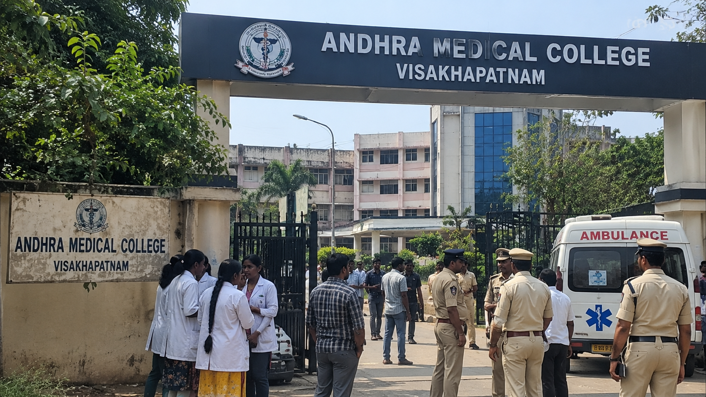

విశాఖపట్నంలోని ఆంధ్ర మెడికల్ కాలేజీలో వరుసగా ఇద్దరు మహిళా పీజీ విద్యార్థినులు మృతి చెందడం తీవ్ర విషాదాన్ని మిగిల్చింది. కేవలం ఐదు రోజుల వ్యవధిలో చోటుచేసుకున్న ఈ రెండు ఘటనలపై ప్రస్తుతం పోలీసులు, వైద్య విద్యాశాఖ అధికారులు దర్యాప్తు చేస్తున్నారు. సెప్టెంబర్ 24న ఎండీ జనరల్ మెడిసిన్ ఫైనల్ ఇయర్ విద్యార్థిని డాక్టర్ పి. శైలజ మృతి చెందగా.. సెప్టెంబర్ 28న ఈఎన్టీ మొదటి సంవత్సరం పీజీ విద్యార్థిని వై. శ్రావణి మృతి చెందారు. వరుస ఘటనల నేపథ్యంలో విద్యార్థుల పరిస్థితులు, చదువు, పరీక్షలు, వ్యక్తిగత సమస్యలు, కోర్సుకు సంబంధించిన అంశాలు తదితర కోణాల్లో అధికారులు వివరాలు సేకరిస్తున్నారు.
మొదటి ఘటన సెప్టెంబర్ 24న చోటుచేసుకుంది. ఆంధ్ర మెడికల్ కాలేజీలో ఎండీ జనరల్ మెడిసిన్ ఫైనల్ ఇయర్ చదువుతున్న డాక్టర్ పి. శైలజ విశాఖలోని రామ్నగర్లోని తన నివాసంలో మృతి చెందారు. ఆమె ప్రస్తుతం పరీక్షలు రాస్తున్నట్లు అధికారులు తెలిపారు. పరీక్షల్లో ఆశించిన స్థాయిలో ఫలితాలు రావడం లేదన్న ఆందోళనను ఆమె కుటుంబ సభ్యులతో పంచుకున్నట్లు పోలీసుల ప్రాథమిక విచారణలో వెల్లడైనట్లు సమాచారం. ఒక పరీక్షకు హాజరుకావాల్సి ఉండగా ఆమె ఇంట్లోనే ఉండిపోయినట్లు, అనంతరం కుటుంబ సభ్యులు గమనించినట్లు అధికారులు తెలిపారు. ఈ ఘటనపై పోలీసులు కేసు నమోదు చేసి దర్యాప్తు చేపట్టారు.
ఈ ఘటన జరిగిన కొద్ది రోజులకే మరో విషాదం చోటుచేసుకుంది. సెప్టెంబర్ 28న ఆంధ్ర మెడికల్ కాలేజీలో ఈఎన్టీ మొదటి సంవత్సరం పీజీ చదువుతున్న వై. శ్రావణి విశాఖలోని చినవాల్తేరులో తాను ఉంటున్న అద్దె నివాసంలో మృతి చెందారు. హైదరాబాద్కు చెందిన శ్రావణి ఉస్మానియా విశ్వవిద్యాలయంలో ఎంబీబీఎస్ పూర్తి చేసి పీజీ చదువు కోసం విశాఖకు వచ్చినట్లు అధికారులు తెలిపారు. ఘటనపై సమాచారం అందుకున్న పోలీసులు అక్కడికి చేరుకుని దర్యాప్తు ప్రారంభించారు. మృతదేహాన్ని పోస్టుమార్టం నిమిత్తం కేజీహెచ్కు తరలించినట్లు పోలీసులు తెలిపారు.

శ్రావణి మృతికి సంబంధించి పోలీసులు ఆమె రాసినట్లు భావిస్తున్న లేఖను కూడా స్వాధీనం చేసుకున్నట్లు స్థానిక నివేదికలు పేర్కొన్నాయి. ఆ లేఖలో తన మరణానికి ఎవరినీ బాధ్యులను చేయలేదని సమాచారం. అదే సమయంలో ఆమె ఈఎన్టీ కోర్సు విషయంలో అసంతృప్తిగా ఉన్నట్లు, కోర్సును మధ్యలోనే వదిలి హైదరాబాద్కు తిరిగి వెళ్లే అవకాశం గురించి కూడా ఆరా తీసినట్లు అధికారులు వెల్లడించారు. అయితే ఇవి దర్యాప్తులో వెలుగుచూసిన ప్రాథమిక అంశాలు మాత్రమేనని, రెండు ఘటనలకు సంబంధించి పూర్తి కారణాలు దర్యాప్తు పూర్తయిన తర్వాతే స్పష్టమవుతాయని పోలీసులు చెబుతున్నారు.
ఐదు రోజుల వ్యవధిలోనే ఇద్దరు పీజీ విద్యార్థినులు మృతి చెందడంతో ఆంధ్ర మెడికల్ కాలేజీలో ఆందోళన వాతావరణం నెలకొంది. వరుస ఘటనల నేపథ్యంలో వైద్య విద్యాశాఖ కూడా దర్యాప్తు ప్రారంభించింది. విద్యార్థులపై చదువు, పరీక్షలు, పనిభారం వంటి అంశాల ప్రభావం ఉందా? వ్యక్తిగత సమస్యలు ఏమైనా ఉన్నాయా? కాలేజీ వాతావరణంలో ఎదురవుతున్న ఇబ్బందులు ఏమైనా ఉన్నాయా? అనే కోణాల్లో అధికారులు వివరాలు సేకరిస్తున్నారు. విద్యార్థులు తమ సమస్యలను అధ్యాపకులు, విభాగాధిపతులు, కాలేజీ యాజమాన్యానికి తెలియజేసేలా చర్యలు తీసుకోవాల్సిన అవసరం ఉందని అధికారులు చెబుతున్నారు.
ఆంధ్ర మెడికల్ కాలేజీ ప్రిన్సిపాల్ డాక్టర్ కె. సంధ్యాదేవి ప్రకారం, ఇద్దరు విద్యార్థినులు తమ తమ విభాగాల్లోని సీనియర్ అధ్యాపకులకు ఎలాంటి సమస్య గురించి ఫిర్యాదు చేయలేదని తెలిపారు. వరుస ఘటనలతో కాలేజీ వర్గాల్లో విషాదం నెలకొన్నట్లు ఆమె పేర్కొన్నారు. విద్యార్థుల కుటుంబాలకు అవసరమైన సహకారం అందిస్తున్నట్లు కాలేజీ అధికారులు తెలిపారు. మరోవైపు ఘటనలపై పూర్తి వివరాలు తెలుసుకునేందుకు కుటుంబ సభ్యులు, స్నేహితులు, కాలేజీ అధికారులు తదితరుల నుంచి సమాచారాన్ని సేకరిస్తున్నారు.
వైద్య విద్యార్థుల చదువు సాధారణ విద్యతో పోలిస్తే ఎక్కువ కాలం, ఎక్కువ శ్రమతో కూడుకున్నది. పీజీ స్థాయిలో క్లినికల్ బాధ్యతలు, పరీక్షలు, డ్యూటీలు, నిద్రలేమి, వ్యక్తిగత జీవితానికి తక్కువ సమయం వంటి అనేక అంశాలు విద్యార్థులపై ఒత్తిడిని పెంచే అవకాశం ఉంటుంది. అయితే ప్రతి విద్యార్థి పరిస్థితి భిన్నంగా ఉంటుంది. అందువల్ల ఇలాంటి ఘటనల వెనుక కారణాలను ఒకే అంశానికి పరిమితం చేయకుండా అన్ని కోణాల్లో పరిశీలించడం అవసరం. ప్రస్తుతం ఆంధ్ర మెడికల్ కాలేజీ ఘటనల్లో కూడా పోలీసులు, వైద్య విద్యాశాఖ అధికారులు ఇదే విధంగా విచారణ కొనసాగిస్తున్నారు.
ఈ వరుస ఘటనలు వైద్య విద్యాసంస్థల్లో విద్యార్థుల భద్రత, మానసిక ఆరోగ్యం, కౌన్సెలింగ్ వ్యవస్థలపై మరోసారి దృష్టిని తీసుకొచ్చాయి. విద్యార్థులకు సమస్యలు ఎదురైనప్పుడు వాటిని ముందుగానే గుర్తించడం, అవసరమైన సమయంలో నిపుణుల సహాయం అందించడం, అధ్యాపకులు మరియు విద్యార్థుల మధ్య సమన్వయం పెంచడం వంటి అంశాలు కీలకంగా మారాయి. అయితే ఈ రెండు ఘటనలకు ఒకే కారణం ఉందని ఇప్పుడే నిర్ధారించలేము. అధికారిక దర్యాప్తు పూర్తయిన తర్వాతే పూర్తి వివరాలపై స్పష్టత వచ్చే అవకాశం ఉంది. అప్పటివరకు అధికారులు వెల్లడించిన సమాచారాన్ని మాత్రమే ఆధారంగా చేసుకుని విషయాన్ని పరిశీలించాల్సి ఉంటుంది.